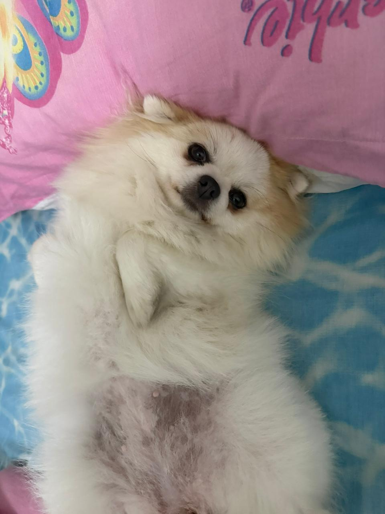
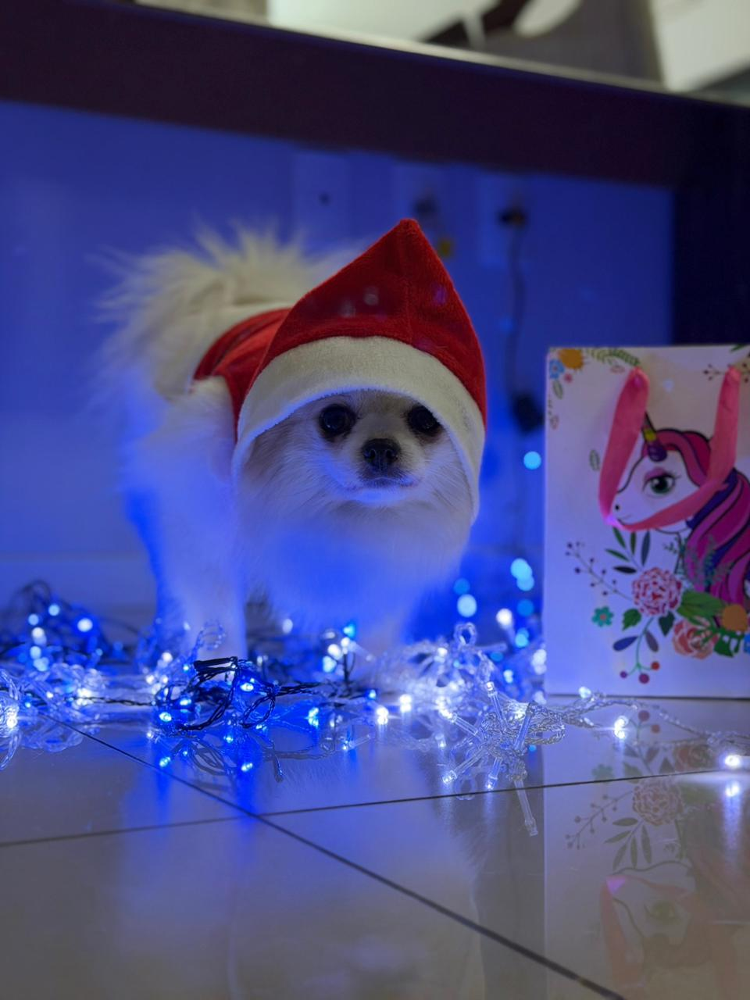

Um site dedicado a mostrar minha filha de quatro patas 💕
Sobre
Idade e Personalidade
Ela tem 4 anos e, neste ano, completa 5. É a cachorra mais carinhosa do mundo,
mas também muito furiosa quando quer. Ama receber carinho, porém tem seus
próprios limites. Quando decide que já foi suficiente, demonstra sua revolta,
pode dar uma mordidinha e sai andando como se nada tivesse acontecido.
Ela é cheia de personalidade e sabe exatamente o que quer!

Conheçam a Hanna
Coisas que ela Ama
Ela ama comer frutinha e simplesmente fica encantada com palavras no
diminutivo. Se você falar "frutinha", "gelinho" ou qualquer coisa
terminando em "inho" ou "inha", ela começa a balançar a cabeça toda
animada. A fruta favorita dela é banana — ou melhor, "nanana", como
ela mesma chama. E quando o assunto é gelo... basta falar "gelinho"
que ela dá mil voltinhas de felicidade!

Hanna com seu presente de Natal
Rotina
Dia a Dia
A rotina dela começa bem cedo! Se alguém se mexer na cama, ela já entende
que o dia começou oficialmente. Levanta animada, acorda todo mundo e só
sossega quando descemos para abrir a porta, para que ela possa fazer
suas necessidades. Depois disso, o dia dela começa cheio de energia.